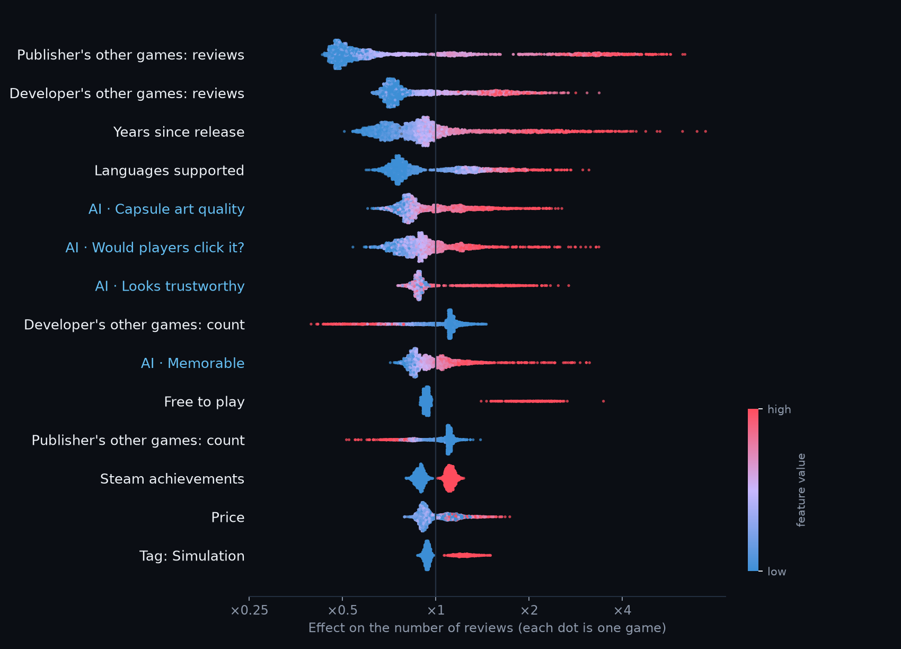

I had an AI rate the store page of 14,836 Steam games: capsule art, screenshots and description. Then I compared that score with how many players each game got.
Short answer: almost never.The ignored games are overwhelmingly the ones with weak pages.
Every dot is one game. Up means a better page score from Jev. Right means more Steam reviews, each step ten times more. Hover or tap a dot to see the game.
The sample includes more successful games than Steam has, so that every level is covered. The charts below are weighted back to represent all 85,152 games.
How page scores are spread out within each group. The ignored games sit to the left, the hits to the right.
Games grouped by where their page score ranks on Steam. For each group, the red bar is the share that got ignored and the green bar the share that became a hit with 1,000+ reviews.
A few games with a page score of 75 or more still got ignored. I took all 18 of them and 18 games with pages just as good that took off, and had a second AI (Claude Haiku) search the web for each one: official site, social accounts, press, videos by other creators, community threads. Store and database pages don't count. Hover a cover for what it found; click to open the game.
All 1,004 games with a page score of 75 or more, weighted to Steam, split by outcome. The count is what each store page itself lists.
One caveat: part of the presence of the games that took off came after their success — popular games get videos and articles written about them, so this cannot show that marketing causes success. The other side is unambiguous, though: the ignored games were not covered before, during or after launch. Nobody knew they existed.
24 random games from each level, drawn in their real proportions. A red outline means the game got ignored. Click any game to open it on Steam.
A machine-learning model predicted every game's reviews from its page (Jev's ratings, in blue) and from facts about the game (in white). These are its Shapley values: each dot is a game, and the further right it sits, the more that feature pushed its reviews up. Red dots are games with a high value for that feature.

Who is behind the game matters most: how many reviews the developer's and publisher's other games have. Right after come the page signals: capsule art quality, whether players would click it, and whether it looks trustworthy. Together, the page ratings make up about a third of what the model uses.
Every page got exactly these questions, word for word. header is the capsule image, screenshots the four screenshots, short_description and description the store texts. The page score is the average of the 29 ratings marked "counts toward the page score". Jev never saw any review count.
Every request also started with this instruction:
This is the Steam store page of a video game.headeris the capsule image shown in store lists,screenshotsare its store screenshots,short_descriptionanddescriptionare its store texts. Judge presentation craft only. Ignore awards, press quotes, review scores and sales claims; they must not raise any rating.
Rate the overall quality of header as capsule art for a game store.
Is header just an in-game screenshot with a title on top, rather than dedicated key art?
Rate the color and contrast of header.
Rate the typography / logo design of the title in header.
Among dozens of capsules in a Steam list, how much would header stand out?
What is the art style of header?
How readable would the title in header be when shown as a small thumbnail (about 230x90 px)?
How quickly can you tell the genre of the game from header alone?
Does header prominently feature a character or creature?
What is the dominant mood of header?
How well does header match the game actually shown in screenshots?
Rate the visual quality and polish of the game shown in screenshots.
Do screenshots mostly show actual gameplay (not menus, concept art, logos or text slides)?
How varied are screenshots (different scenes, mechanics, situations)?
From screenshots alone, how well can you understand what the player actually does?
How clean and readable is the in-game UI in screenshots?
How consistent is the art direction across screenshots?
What production scale do screenshots suggest?
What kind of graphics does the game in screenshots have?
How original are the art assets in screenshots?
How technically clean are the images in screenshots (resolution, no stretching, no compression artifacts)?
Do screenshots show placeholder, unfinished or debug graphics?
How well does the start of short_description and description hook the reader?
After reading short_description and description, how clear is what you actually do in the game?
How clear and distinctive is what makes this game different from others, per description?
Rate the writing quality of description (grammar, fluency, concision).
Rate the structure and formatting of description (headings, short paragraphs, lists).
Does description include a clear list of features?
How generic or cliché is description?
Does description mention awards, press quotes, review scores or famous previous games?
What is the tone of description?
How concrete is description (named mechanics, numbers, specifics) versus vague adjectives?
How well does description evoke a feeling or a fantasy the player wants?
Does description clearly name the game's genre?
Does the first sentence of short_description say what kind of game it is?
Rate the overall quality of this store page as a whole (images and text).
rating · counts toward the page score: Amateur → Weak → Average → Professional → OutstandingHow well do header, screenshots and description fit together as one consistent pitch?
How likely would a typical Steam user be to click on and wishlist this game based on this page?
rating · counts toward the page score: Very unlikely → Unlikely → Maybe → Likely → Very likelyWho most likely made this game, judging by the page?
pick one: A solo hobbyist · A dedicated solo developer · A small indie team · An established indie studio · A large AA/AAA studioHow broad is this game's likely audience?
rating: Tiny niche → Niche → Moderate → Broad → Mass marketHow legitimate and trustworthy does this game look (versus a cash grab or scam)?
rating · counts toward the page score: Looks like a scam → Doubtful → Neutral → Trustworthy → Clearly a serious productHow original is the game's concept?
rating · counts toward the page score: Pure clone → Derivative → Some twist → Original → Highly originalHow memorable is this game after seeing the page once?
rating · counts toward the page score: Forgettable → Barely → Somewhat → Memorable → UnforgettableDo you recognize this specific game as a well-known title?
yes / noWithin 3 seconds of seeing header and short_description, how well would a user grasp the game's concept?
How crowded is this game's genre on Steam?
rating: Almost no competition → Little → Moderate → Crowded → Extremely saturatedI started from a list of 85,152 Steam games and their review counts, from SteamSpy. I picked 14,836 of them so that every level of success is covered, from zero reviews to millions, and weighted them back so the numbers represent all of Steam.
For each game I took what a player sees on its store page: the capsule image, four screenshots and the description, from Steam's store API. An AI model, Jev by TypeSafe, answered the 46 questions above about each page. Asked the same questions twice, it gave practically the same answers (r = 0.99). On 240 pages that I rated blind myself, it agreed with me on which page was better 7 to 8 times out of 10.
Steam keeps sales private, so success is measured in reviews. One review is roughly 30 to 60 copies sold. "Ignored" means fewer than 10 reviews.
For the web-presence section, Claude Haiku (a small model from Anthropic) web-searched 36 of these games: every ignored game with a page score of 75 or more, plus 18 equally good pages that ended up with 1,000 to 30,000 reviews, picked at random as a control. Each search looked for an official site, social accounts, press coverage, videos by other creators and community threads, with the same questions every time. Every claim on that section links to what the search actually found.